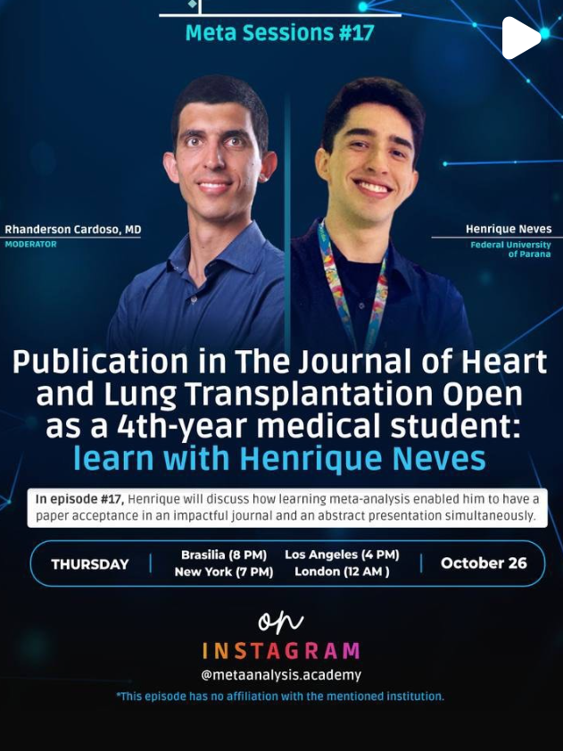

2023 - Outubro

Entrevista com Rhanderson Cardoso
Fui entrevistado pelo próprio Dr. Rhanderson Cardoso no Meta-Sessions #17 pelo sucesso da minha primeira publicação!
Uma linha do tempo com momentos marcantes da minha jornada pessoal e acadêmica.
Tive a maravilhosa honra e oportunidade de apresentar minha primeira meta-análise no Congresso Brasileiro de Cardiologia, que aconteceu em Porto Alegre. Foi uma viagem muito especial, pois pude fazê-la junto dos meus grandes amigos Bruna, Gabriela e Vinicius!
Curiosidades: Foi a primeira vez que apresentei um trabalho em um grande congresso nacional. Tivemos momentos inesquecíveis e de muita amizade.


Entrei no estágio "Acadêmicos do PS" no Hospital do Trabalhador, em Curitiba. Foram experiências incríveis neste hospital voltado ao trauma.

Em Junho de 2023, no CANC tive um ponto de virada. Apresentei minha primeira meta-análise no congresso acadêmico da UFPR para mais de 100 pessoas. Ganhei o prêmio de melhor apresentação oral! A partir deste dia, muita coisa mudou!

Tive a honra de organizar o 1º Workshop Internacional do projeto MedEpiGen.

Criei meu primeiro blog - chamado Vida de Mediciner - onde eu contava minhas histórias e dava dicas sobre estudos e ciência.
Pude levar pela primeira vez um projeto da Universidade para a base da Força Aérea Brasileira em Curitiba, o CINDACTA II. Foram realizadas coletas em mais de 300 participantes do quartel.
A Técnica Operatória foi um marco na faculdade! Realizamos o primeiro ato operatório em um porquinho.
Em agosto de 2022, recebo uma chamada em meu telefone. Era o próprio Rhanderson Cardoso me convidando para integrar a segunda edição do Intensivo de Metas. Essa foi uma das melhores decisões que tomei em toda minha vida!
Ainda no 3º Período, ingressei na Liga Acadêmica do Coração (LIACOR), a liga de Cardiologia da UFPR, que seria minha casa por muito tempo!

Organizei um Júri Simulado com o CRM-PR, como parte de um projeto de extensão de Bioética e Ética Médica.

No mês de Março nossas aulas começaram a voltar presencialmente. Foi quando pude encontrar meus amigos novamente.

No mês de Setembro, ingressei em minha primeira iniciação científica, parte do Projeto Mennogen, da professora Drª Angelica Winter Boldt. Era sobre a relação entre a COVID-19 e a vacinação da população menonita.

Após as aulas ficarem suspensas durante o auge da pandemia, as aulas retornam no formato online pela UFPR.

Em Fevereiro começaram oficialmente as minhas aulas no Centro Politécnico da UFPR

Aos 17 anos, fui aprovado em Medicina na universidade mais antiga do país, a Universidade Federal do Paraná!
Apresentação da minha primeira meta-análise e viagem inesquecível a Porto Alegre com amigos.
Conversa com o Dr. Rhanderson Cardoso sobre minha primeira publicação.
Minha primeira experiência em uma liga acadêmica: Cardiologia na UFPR.